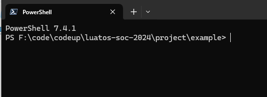
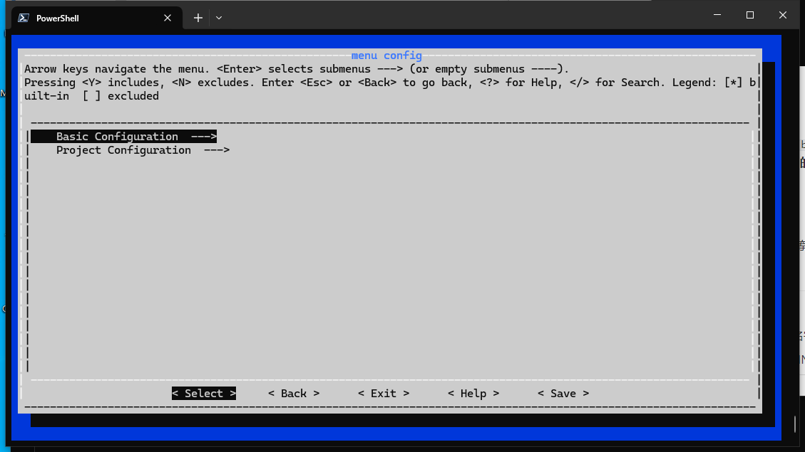
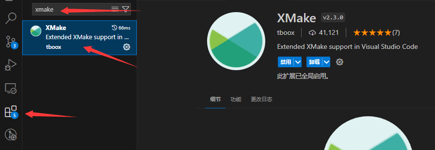
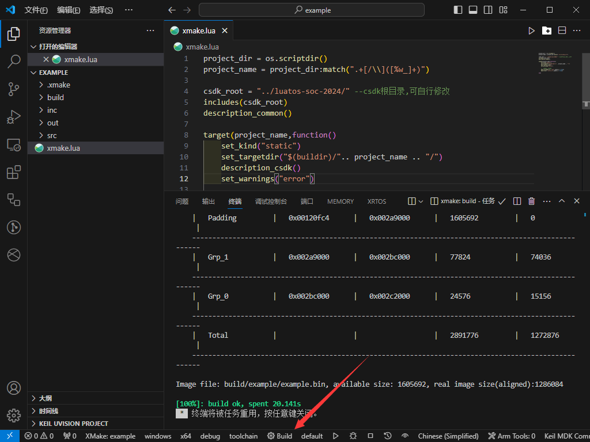

CSDK for ABCDEGF

注意：不管之前有没有用过合宙其他仓库的CSDK，使用前请详细阅读本readme的每一句话，不要跳过！！！
注意：不管之前有没有用过合宙其他仓库的CSDK，使用前请详细阅读本readme的每一句话，不要跳过！！！
注意：不管之前有没有用过合宙其他仓库的CSDK，使用前请详细阅读本readme的每一句话，不要跳过！！！
注意：对于之前使用luatos-soc-2022仓库开发的项目代码无法直接复制到luatos-soc-2024编译使用，查看本仓库project中各个demo的xmake.lua进行修改并参考主库csdk api进行修改才可使用！！！
注意：对于之前使用luatos-soc-2023仓库开发的项目代码可以直接复制到luatos-soc-2024编译使用，但编译脚本要进行修改，查看本仓库project中各个demo的xmake.lua进行修改才可使用！！！
luatos-soc-2023迁移luatos-soc-2024文档请点击这里跳转
使用前须知！！！
- 强烈推荐使用git来下载本代码库, 不会命令行操作git可以用 tortoiseGit
- 本CSDK底层是没有AT指令的,不存在"调用某某AT指令"的情况
- 由于依赖luatos主库，所以要在 luatos-soc-2024/xmake.lua中配置luatos仓库目录，默认luatos目录在luatos-soc-2024同级目录，文件夹名称必须是LuatOS, LuatOS, LuatOS, 即在luatos-soc-2024同级目录 clone LuatOS 仓库即可，否则编译报错
- 本项目使用xmake构建，就算不熟悉lua和构建也能直接上手使用，几乎不会在构建上花费您的时间，**但如需自定义的一些操作请先查看下相关api**
- 请留意, 本代码库使用的GCC版本与 luatos-soc-2022 库是不一样的, 无法更换,同样由于lto原因也不要擅自更改编译工具链
文档中心
- CSDK软件开发资料
- 差分工具及docker镜像
介绍
CSDK for ABCDEGF, 适用于所有基于ABCDEGF的合宙模组, 包括衍生型号及海外型号:
- Air780EP
- Air780ET
- Air780EL
目录说明
- PLAT 打包好的sdk, 含协议栈, 部分源码, 头文件, 打包工具
- project 项目文件, 每个不同的项目代表不同的demo或者turnkey方案
- xmake.lua 主编译脚本, 一般不需要修改
编译说明
安装xmake, Windows安装时注意选取加入PATH. xmake下载地址：https://github.com/xmake-io/xmake/releases windows下载系统对应的xmake-x.x.x-win32.exe或者xmake-x.x.x-win64.exe安装即可. 建议使用最新版.
注意：环境变量需重启电脑生效
注意：如果网络无法下载github等地址，采用下面的本地地址下载，后续更新xmake也会同步更新下方地址！！！
本地下载地址: https://pan.air32.cn/s/DJTr?path=%2F%E5%B8%B8%E7%94%A8%E5%B7%A5%E5%85%B7
linux和macos安装请自行参考,但并不建议,因为macos无法打包,并且Luatools只支持windows 安装教程: https://xmake.io/#/guide/installation
编译操作
示例环境使用windows，linux/macosx 实际上也是通用的编译方式
在项目下打开终端，比如example,就在luatos-soc-2024\project\example下打开终端,即

首先执行配置，执行 xmake f --menu

Basic Configuration 我们不用去管，里面是编译架构/编译器相关配置，项目中会自动配置好交叉编译器，这里我们忽略，选择 Project Configuration 根据自己实际使用配置即可
配置完成选择Exit退出，询问是否保存选择yes
注意:上述配置操作只需要配置一次，之后会一直生效，只有修改配置才需要重新执行配置操作
随后执行 xmake进行编译即可，生成的binpkg/soc/日志数据库(comdb.txt)等文件都位于项目下out目录
ps：如果不想使用图形也支持使用命令行配置方式，例如xmake f --chip_target=ec718p --lspd_mode=y --denoise_force=n ，具体支持的配置项和参数执行 xmake f --help 查看 Command options (Project Configuration)下具体描述
清理编译
执行 xmake clean -a可以清除编译产生的中间文件(通常执行此命令即可)
执行 xmake f -c可以清除自己的配置(清除后需要重新执行上述配置)
加入自己的项目
仿照着example即可，项目可以放在任意目录下，其他盘符也没问题，不需要放在luatos-soc-2024目录下，只需要在自己项目的xmake.lua中配置好 csdk_root 路径即可 注意:路径不要有中文，空格等特殊符号！！！
xmake插件(可选)
上面的文档已经有了完整编译过程，此处插件说明为可选，目的为更方便使用编译，如不需要可跳过看下面
在vscode扩展中安装xmake

之后编写xmake.lua就有代码联想了，并且可以提示错误,并且可以在vscode中直接一键编译

非常方便
加入入口函数
- 加入头文件common_api.h
- 类似于
void main(void)，但是可以任意名字，不能有入口参数和返回参数，同时允许多个入口 - 通过INIT_HW_EXPORT INIT_DRV_EXPORT INIT_TASK_EXPORT这3个宏修饰后，系统初始化的时候会调用function，不同的宏涉及到调用顺序不同
- 大优先级上
INIT_HW_EXPORT>INIT_DRV_EXPORT>INIT_TASK_EXPORT - 这3个宏有统一用法
INIT_HW_EXPORT(function, level)，其中function就是入口函数，level是小优先级，填"0","1","2"...(引号要写的)，引号里数字越小，优先级越高。 INIT_HW_EXPORT一般用于硬件初始化，GPIO之类的，可以没有INIT_DRV_EXPORT一般用于外设驱动初始化，初始化外部器件之类的，打开电源，提供时钟之类的，可以没有INIT_TASK_EXPORT一般用于初始化任务，用户代码基本上都是跑在任务里，原则上必须有
luatos-soc-2023迁移luatos-soc-2024
luatos-soc-2023迁移luatos-soc-2024主要有两点：
1，项目xmake.lua改动
这里我们直接以example_audio_flash为例，因为它覆盖较全：
前两行直接替换为
并添加
set_targetdir(LIB_DIR)修改为 set_targetdir("$(buildir)/".. project_name .. "/") 并添加description_csdk()
后面都为变量修改，TARGET_NAME修改为project_name， LUATOS_ROOT替换为luatos_root，修改原因为注意这不算通用全局变量，因为脚本域不可用，一定注意
由于项目路径修改，$(projectdir) 需改为 csdk_root
至此修改结束，修改后为
2，编译方式改动
之前为 build.bat 方式编译，这种方式并不跨平台，并且之前仓库一直引入环境变量也需要去掉，新的编译方式
编译直接执行xmake即可，并且跨平台，还可以在vscode中直接一键编译，非常方便
如果还是想使用2023仓库的build.bat方式编译，这里提供个兼容脚本
命名为build.bat放在luatos-soc-2024目录下，使用方法和2023一样，但是编译资源生成路径依然有变化，参考前面的编译文档
常见问题:
1，xmake包默认安装c盘，我c盘空间不多不想安装在c盘
答: 设置相关目录到其他盘 xmake g --pkg_installdir="xxx" 设置包安装目录 xmake g --pkg_cachedir="xxx" 设置包缓存目录
2，我电脑无法联网，如何下载安装包？
答:可以提前准备好包，这里以windows环境安装本仓库gcc交叉编译工具链为例
首先下载好gcc-arm-none-eabi-10-2020-q4-major-win32.zip到D盘根目录，执行 xmake g --pkg_searchdirs="D:"xmake会优先搜索设置的目录去搜索安装包，就不必联网了
gcc下载连接参考 csdk.lua中的连接，选择对应平台下载
3，github包是否可以加速？
答:xmake g --proxy_pac=github_mirror.lua可设置内置的github加速镜像
4，更新xmake时候windows报毒怎么办？
答:xmake是完全开源的，可以放心使用，误报手动允许即可
5，更新xmake后使用遇到
报错怎么办
答:最直接的方式是删除 localappdata%/.xmake/repositories (通常为 C:\Users\用户名\AppData\Local\.xmake\repositories) 之后重新执行即可
更多问题可自己看xmake文档
授权协议
[MIT License](LICENSE)
制作者